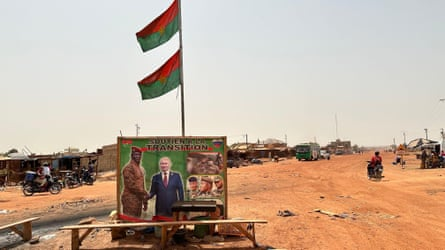

Burkina Faso’s military summarily executed 223 civilians, including at least 56 children, in a single day in late February, according to an investigation into one of the worst abuses by the country’s armed forces for years.
The mass killings have been linked to a widening military campaign to tackle jihadist violence and happened weeks after Russian troops landed in the west African country to help improve security.
The massacre may amount to crimes against humanity, according to a report by Human Rights Watch (HRW), which urged Burkinabè authorities to launch an urgent UN-backed investigation.
Collating witness testimony and verifying videos and photographs, HRW researchers found that on 25 February, soldiers killed 179 people, including 36 children, in Soro village and 44 people, including 20 children, in nearby Nondin village, in northern Yatenga province.
The findings come days after UN officials and African leaders met in Nigeria to discuss solutions to counter the growing threat of terrorism on the continent, a conference that officials from Burkina Faso did not attend.
Experts noted that the killings occurred while US counter-terrorism strategy in the region was faltering , as the country increasingly pivoted towards Russia for its security strategy.
Burkina Faso’s military backed president, Ibrahim Traoré, hopes the alignment with Moscow will reshape the country’s near decade-long conflict with insurgents linked to Islamic State and al-Qaida.
A month before the killings, the first significant deployment of Russian troops arrived in the country, though there is no suggestion they were involved in the massacre.
A poster of Russia’s president, Vladimir Putin, and Burkina Faso’s interim president, Ibrahim Traoré, with the slogan ‘Support for the transition’, in the country’s capital, Ouagadougou, March 2024.Photograph: Dpa Picture Alliance/Alamy
Witnesses said it was beyond doubt that the atrocities were part of a long-running counter-terrorism campaign targeting civilians accused of collaborating with Islamist militants.
“The Burkinabè army has repeatedly committed mass atrocities against civilians in the name of fighting terrorism, with almost no one held to account,” said Tirana Hassan, executive director of HRW.
“Victims, survivors and their families are entitled to see those responsible for grave abuses brought to justice.”
Villagers said that on 25 February, military forces stopped in Nondin and then Soro, 5km away, and accused residents of being complicit with the jihadists.
“They said we do not cooperate with them [the army] because we did not inform them about the jihadists’ movements,” a 32-year-old female survivor from Soro, who was shot in the leg, told HRW.
In Soro, villagers described soldiers shooting people who had been rounded up or tried to hide or escape.
“They separated men and women in groups,” a 48-year-old farmer told HRW. “I was in the garden with other people when they [soldiers] called us. As we started moving forward, they opened fire on us indiscriminately. I ran behind a tree, and this saved my life.”
Witnesses in Nondin said soldiers went door to door, ordering people to come out of their homes and show their identity cards. They then rounded up villagers in groups before opening fire on them. Soldiers also shot at people trying to flee or hide.
The Burkina Faso government has been approached for comment.